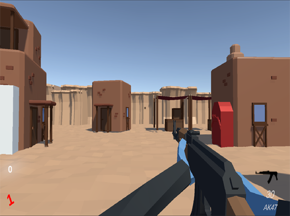
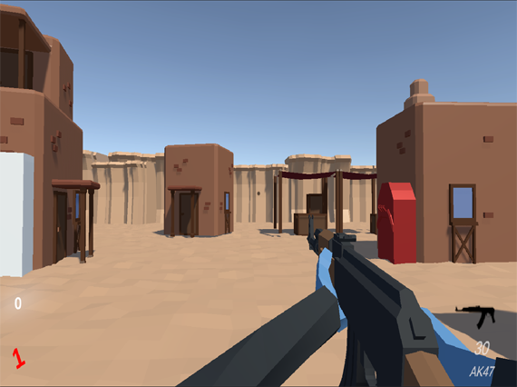
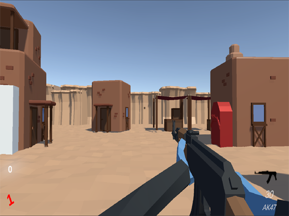
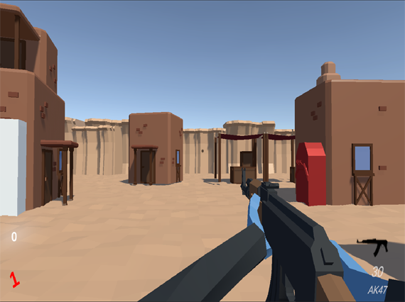

Escape The Office

 



Escape The Office is a virtual reality game which makes use of researched techniques often used in the industry
to
mitigate the effect of motion sickness. This project was created as my final year project at University and is a
playable experience which is welcoming to unexperienced VR users. This project was created using C#, Unity and
Unity's
XR plugin.
The core gameplay loop is simple: The player will spawn on a randomly selected map and must
escape two rooms before the
timer expires. During this project, I sharpened my C# skills as well as my understanding the of Unity game
engine. As
this was my second virtual reality playable experience, I had a lot to learn and had to adapt to a new type of
development - which I was able to do easily with the support of Unity XR.